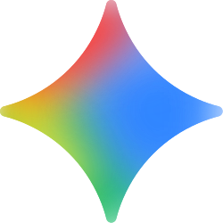

LLMs beyond chat
From Conversations to Real-World Automation

Presenter:
Ovidijus Parsiunas
Presenter02 / 17
▍Presenter / 発表者
About me
Ovidijus Parsiunas
https://github.com/OvidijusParsiunas
www.linkedin.com/in/ovidijus-parsiunas-1a8a85106
Agenda02 / 16
▍Today / 今日
What we'll cover today
LLMs as tools
メンタルモデル ― チャット画面の向こうで、APIが実際に渡してくれるもの。
The agentic loop
関数呼び出し・フィードバック・反復が、モデルを「動く存在」に変える仕組み。
Examples
実例集 ― スマートホームから、ポケモンをプレイするLLMまで。
Automate your world
実践のコツ、落とし穴、そしてこの先の展望。
Chapter 01 · Foundations03 / 16
▍基本のチャット
Large Language Model
Chat
How are you doing?
I'm doing great, thanks for asking!
Input
Prompt
Response
LLM



Chapter 01 · Foundations04 / 17
▍基本のチャット
Tools
Chat
How are you doing?What is the weather in Tokyo?What is the stock price of Tesla?
I'm doing great, thanks for asking!Tokyo is currently around 19°C and partly cloudyIt's trading around the mid-$370 range today.
Input
Prompt
+
getForecast()
getStockPrice()
Response
getForecast()getStockPrice()+ Tokyo+ Tesla
<code/>
19°C and partly cloudy
$370
Response
LLM
Chapter 01 · Foundations05 / 17
▍基本のチャット
Tools
Chat
How are you doing?What is the weather in Tokyo?What is the stock price of Tesla?
I'm doing great, thanks for asking!Tokyo is currently around 19°C and partly cloudyIt's trading around the mid-$370 range today.
Input
Prompt
+
getForecast()
getStockPrice()
Response
getForecast()getStockPrice()+ Tokyo+ Tesla
<code/>
19°C and partly cloudy
$370
Response
LLM
Another API
MCP server
$370
Chapter 01 · Foundations06 / 17
▍基本のチャット
Tools
Chat
How are you doing?What is the weather in Tokyo?What is the stock price of Tesla?Turn on the light
I'm doing great, thanks for asking!Tokyo is currently around 19°C and partly cloudyIt's trading around the mid-$370 range today.Done
Input
Prompt
+
getForecast()toggleLight()
getStockPrice()toggleHeater()
Response
Response
toggleLight()+ ON
LLM
Chapter 01 · Foundations07 / 17
▍基本のチャット
Tools
Chat
How are you doing?What is the weather in Tokyo?What is the stock price of Tesla?Turn on the lightControl temperature
I'm doing great, thanks for asking!Tokyo is currently around 19°C and partly cloudyIt's trading around the mid-$370 range today.Done
Input
Prompt
+
getForecast()toggleLight()
getStockPrice()toggleHeater()getTemperature()
Response
getTemperature()
10°C
Response
toggleLight()+ ON
toggleHeater()+ ON
Fail
toggleHeater()
+ ON
LLM
Chapter 01 · Foundations08 / 17
▍基本のチャット
Tools
Chat
How are you doing?What is the weather in Tokyo?What is the stock price of Tesla?Turn on the lightControl temperatureNext move
I'm doing great, thanks for asking!Tokyo is currently around 19°C and partly cloudyIt's trading around the mid-$370 range today.Done
Input
PromptPrompt / Context
+
getForecast()toggleLight()move()
getStockPrice()toggleHeater()getTemperature()attack()
Input
Response
getTemperature()
attack()
output()
10°C
10HP
Input
Response
toggleLight()+ ON
toggleHeater()+ ON
attack()
output()
Fail
0HP
Input
toggleHeater()+ ON
move()
output()
LLM
Chapter 01 · Foundations09 / 17
▍基本のチャット
Tools
Chat
How are you doing?What is the weather in Tokyo?What is the stock price of Tesla?Turn on the lightControl temperatureNext moveDrive a carLaunch a rocket to the moon
I'm doing great, thanks for asking!Tokyo is currently around 19°C and partly cloudyIt's trading around the mid-$370 range today.DoneSuccessfully landed
Input
PromptPrompt / Context
+
getForecast()toggleLight()move()
getStockPrice()toggleHeater()getTemperature()attack()
Input
Car is stationary
All systems OK
Response
getTemperature()
attack()
output()
accelerate()
mainEngineStart()
10°C
10HP
Input
Green light
Approaching moon
Response
toggleLight()+ ON
toggleHeater()+ ON
attack()
output()
accelerate()
deployLander()
Fail
0HP
Input
Nearing red light
Altitude 50km
toggleHeater()+ ON
move()
output()
stop()
stageSeparation()
LLM
Chapter 05 · Practice13 / 16
▍知っておくべき4つのこと
Four things worth knowing.
01 · Scope
Many calls > one long chat.
長い会話を続けるより、毎回新しい呼び出しを。
02 · Right-size
Simple models for simple tasks.
簡単なタスクには小さなモデルで十分。安くて速い。
03 · Mistakes
AI can make mistakes.
出力を信頼しすぎず、必ず検証する。
04 · Failure
APIs go down. Plan for it.
APIは落ちることがある。リトライやフォールバックを忘れずに。
Chapter 06 · Forward14 / 16
▍次に来るもの
What's coming next.
{ } · New idea
Programmatic tools
モデルが必要なツールをその場でコードとして生成する。
⇄ · Transport
WebSockets
双方向ストリームでリクエスト/レスポンスを置き換え、低遅延を実現。
↑ · Trajectory
Smarter · Faster · Cheaper
モデルは賢く、速く、安くなり続ける。
⌂ · Closer
Edge computing
デバイス上で動く小さなモデル。サーバーへの往復が不要に。
Chapter 01 · Foundations05 / 17
▍基本のチャット
Tools
Chat
How are you doing?What is the weather in Tokyo?What is the stock price of Tesla?
I'm doing great, thanks for asking!Tokyo is currently around 19°C and partly cloudyIt's trading around the mid-$370 range today.
Input
Prompt
+
getForecast()
getStockPrice()
Response
getForecast()getStockPrice()+ Tokyo+ Tesla
<code/>
19°C and partly cloudy
$370
Response
LLM
Another API
MCP server
$370
Chapter 06 · Forward14 / 16
▍次に来るもの
What's coming next.
{ } · New idea
Programmatic tools
モデルが必要なツールをその場でコードとして生成する。
⇄ · Transport
WebSockets
双方向ストリームでリクエスト/レスポンスを置き換え、低遅延を実現。
↑ · Trajectory
Smarter · Faster · Cheaper
モデルは賢く、速く、安くなり続ける。
⌂ · Closer
Edge computing
デバイス上で動く小さなモデル。サーバーへの往復が不要に。
Chapter 01 · Foundations05 / 17
▍基本のチャット
Tools
Chat
How are you doing?What is the weather in Tokyo?What is the stock price of Tesla?
I'm doing great, thanks for asking!Tokyo is currently around 19°C and partly cloudyIt's trading around the mid-$370 range today.
Input
Prompt
+
getForecast()
getStockPrice()
Response
getForecast()getStockPrice()+ Tokyo+ Tesla
19°C and partly cloudy
$370
Response
LLM
Another API
MCP server
$370
Chapter 06 · Forward14 / 16
▍次に来るもの
What's coming next.
{ } · New idea
Programmatic tools
モデルが必要なツールをその場でコードとして生成する。
⇄ · Transport
WebSockets
双方向ストリームでリクエスト/レスポンスを置き換え、低遅延を実現。
↑ · Trajectory
Smarter · Faster · Cheaper
モデルは賢く、速く、安くなり続ける。
⌂ · Closer
Edge computing
デバイス上で動く小さなモデル。サーバーへの往復が不要に。
Q & A · 質問
▍ご質問をお待ちしております
Questions?
Fin · 終わり
▍ご清聴ありがとうございました
Thank you!
Chapter 02 · Tools04 / 16
▍The one idea
You hand the model
a menu of functions.
The model doesn't execute anything itself — it asks you to. You run the function, hand back the result, it continues.
getForecast()
getStockPrice()
sendEmail()
toggleLight()
+ anything with an API
// request to the API
messages: [
{ role: "user",
content: "weather in Tokyo?" }
]
tools: [getForecast, getStockPrice, …]
// model's reply
→ tool_use: getForecast("Tokyo")
Tools · reading the world05 / 16
▍Pattern 01
Tools that fetch.
Userweather in Tokyo?
LLM+ tools menu
APIgetForecast()
19°C · partly cloudy
Search engines, maps, databases, MCP servers — anything read-only the model wouldn't otherwise know.
Tools · acting on the world06 / 16
▍Pattern 02
Tools that do.
Same mechanism — the model picks a function and arguments. But now the function flips a switch, sends a message, charges a card.
This is the line.
On one side: a chatbot.
On the other: an actor in the world.
On one side: a chatbot.
On the other: an actor in the world.
toggleLight("kitchen", on)
toggleHeater(22)
sendEmail("boss@…", …)
pressButton("A")
deployLander()
Chapter 03 · The loop07 / 16
▍Agentic loop
Act. Observe. Decide. Repeat.
user: "warm up the living room"
↓
model → toggleHeater(22)
result: ok
model → getTemperature()
result: 10°C // still cold
model → toggleHeater(25)
result: ok
model → getTemperature()
result: 21°C ✓
This is what people mean by "agent" — a model wrapped in a loop it can drive.
⚠︎ Every turn re-sends the whole conversation.
Context — and cost — grow with each step.
Keep loops tight.
Context — and cost — grow with each step.
Keep loops tight.
Chapter 03 · Optimisation08 / 16
▍Free speed-up
The model can ask for
many tools at once.
Sequential · 4 round-trips
→ move() ← ok
→ attack() ← 10 HP
→ jump() ← ok
→ attack() ← 0 HP
Parallel · 1 round-trip
→ move() · attack() · jump() · attack()
one turn, four results
Independent calls run together.
Fewer tokens. Lower cost. Faster response.
Fewer tokens. Lower cost. Faster response.
Chapter 04 · The pattern09 / 16
▍Three boxes
Input → Process → Output.
INPUTsensor · message · frame
PROCESSLLM + tools
OUTPUTaction · write · command
Once you see it, you start noticing it everywhere.
Chapter 04 · Scale10 / 16
▍Same shape, any domain
It works for a light switch.
It works for a rocket.
Home
Warm the room
temp reading → decide → toggle heater
Road
Self-driving car
red light seen → decide → brake
Game
Play Pokémon
screenshot → decide → press A
Desk
Triage inbox
new email → decide → reply or file
Air
Assist a pilot
sensor feed → decide → adjust trim
Space
Land on the moon
altitude reading → decide → deploy lander
Case study11 / 16
▍Case study · in the wild
An LLM
plays Pokémon.
A community project hooked a model up to a Pokémon Red emulator and let it run. It plays — slowly, goofily, but it plays.
Same three-box pattern. Input is a screenshot plus game state. Process is the model. Output is a button press.
youtube.com/watch?v=pAkElOzD5Rw
github.com/davidhershey/ClaudePlaysPokemonStarter
github.com/davidhershey/ClaudePlaysPokemonStarter
PALLET TOWN
▸ A wild PIDGEY appeared!
PIDGEY Lv. 5
HP ████████░░ 24 / 30
> model chose: FIGHT → TACKLE
> emulator: pressButton("A")
Case study · architecture12 / 16
▍How it's wired
The three-box diagram,
concretely.
INPUT
Every few seconds
- Screenshot of the screen
- Game stats from memory
- Prompt + running history
PROCESS
LLM + tools
- Reason over screen + state
- Choose: press key, or route?
- Loop until confident
OUTPUT
Tool calls
pressButton("A")navigateTo("gym")- Emulator executes
Swap the three boxes and you have a trading bot, a home-automation agent, or a rover. The shape doesn't change.
Recap15 / 16
▍The whole talk, in four lines
Chat is one surface.
The API gives you tools.
A loop around tools is an agent.
Input → process → output, applied everywhere.
Fin16 / 16
▍Q & A / 質問
Thank
you.
Questions — or tell me what you'd wire an LLM up to.
Ovidijus Parsiunas · LLMs beyond chat · 2026